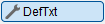
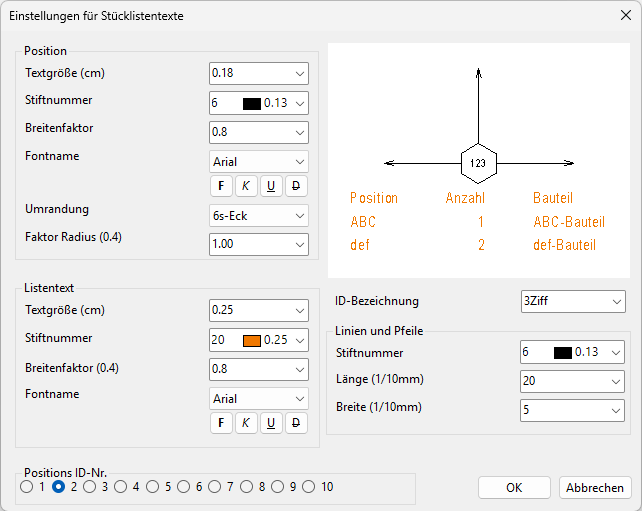

")
")

Stücklisten-Textstile für die Darstellung der Stücklistentexte. Öffnet den Dialog Einstellungen für Stücklistentexte.
Die Positionskreis-Stile (Positions ID- Nr.) 1 bis 10 haben originär die ID-Bezeichnung Standard.
 |
§Wählen Sie im Dialog Einstellungen für Stücklistentexte unter Positions ID-Nr. den Stücklisten-Textstil, den Sie bearbeiten wollen.
Die Darstellung des gewählten Stücklisten-Textstils wird als Vorschau angezeigt.
§Geben Sie unter ID-Bezeichnung einen möglichst treffenden Namen für den Stücklisten-Textstil an.
Dieser Name wird nach abgeschlossener Konfiguration in der Stücklisten-Textstil-Auswahl (auf der Optionspalette für Stücklisten) verwendet.
§Ändern Sie die gewünschten Text-, Linien- und Pfeilspitzen-Darstellungen. Die Vorschau unterstützt Sie bei der Auswahl der Parameter.
§Um einen weiteren Stücklisten-Textstil zu definieren oder zu bearbeiten, wählen Sie eine andere Positions ID- Nr. aus.
§Klicken Sie auf OK, um die Einstellungen zu übernehmen.
Die neu definierten Stücklisten-Textstile können in der Stücklisten-Textstil-Auswahl (im Funktionsbereich) aufgerufen werden.
Stil-Konfiguration für die Darstellung von Tragwerkspositionen
Position
Textgröße, Stiftnummer, Breitenfaktor, Fontname Darstellung des Stücklistentextes. Faktor Radius (0.4) Bestimmung des Abstands zum Text. |
Listentext
Textgröße, Stiftnummer, Breitenfaktor, Fontname Darstellung des Stücklistentextes. |
Linien und Pfeile
Stiftnummer Auswahl der Stiftnummer. Länge (1/10mm) Die Eingabe von 20/10mm entspricht 2mm auf der Zeichnung. Höhe (1/10mm) Das Maß für die Höhe bezieht sich auf jede Linie. |
Positions ID-Nr.
Auswahl der Positions ID- Nummer, die bearbeitet werden soll.
ID-Bezeichnung
Bezeichnung des Stücklisten-Textstils. (Wird in der Stücklisten-Textstil-Auswahl (im Funktionsbereich) angezeigt.)
Zugehörige Referenz: